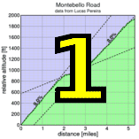

|  |  |
 |
| Skyler Colwell scoring for Team Colwell (Judy Colwell) |
| llumix photos are up! |
Due to it being Day of the Horse in Woodside on Kings Mountain Road, Low-Key made a late switch to the classic climb of the Bay Area, if not the entire continent of North America, Old La Honda Road.
We had a great turnout of riders today and an even greater turn-out of volunteers, including Bill Bushnell who joined the results crew after absolutely blitzing the climb in sub-11 on his hybrid-electric bike, despite some mechanical issues. When asked if his machine had been "upgraded" for this year, his only response was a subdued, "I made some changes..."
On the men's side, Brian Lucido took control from the first group to cross the line in 16-even, matching Tracy Colwell's 1990's Low-Key record, so a very solid time from Brian. Michael ONeill, whose wife Emillee was providing excellent finish-line assistance, finished in an excellent 16:16, just ahead of Low-Key legend Tim Clark. John Novitsky and Kieran Sherlock also broke the 16:30 barrier.
On the women's side, Kelly Crowley was back, shattering the 20-minute barrier with her time of 19:17. Helen Casabona and Janet Martinez finished off the top 3 in the strong 17-rider women's field, each of these three women qualifying for a Strava T-shirt by finishing ahead of Linda Jackson's existing Strava QOM. None of the men were able to beat Chris Phipp's KOM time today. Notable in the women's standing was Kirsten Do's impressive junior debut, finishing well under the 30 minute barrier with her excellent 28:12, moving her into second place in the junior overall standings behind Andre Swart.
Brian and Janet combined with Carl Nielson to score top points for last year's series champion team, the Sisters and Misters of No Mercy. Low-Key was second with Western Wheelers a close third. The points weren't enough to tip Western Wheelers from the lead of the team standings, however. Next week the standings go to two qualifying races rather than one, so Western Wheelers strong result today will help.
Chris Phipps stays in the overall lead for the men, although that will change next week when Chris won't be joining us, putting Brian Lucido in prime position to move to the top spot from his present #2. It's a tight fight for third with Tracy Colwell, who rode tandem today with his son Liam, presently in that slot. Tracy and Liam were joined on Team Colwell by Tracy's other son Skyler, who returned for his second solo ride. Skyler had another impressive finish to take the lead in the Endurance competition.
On the women's standings, Kelly's impressive climb today put her in the top spot, with Helen Casabona in second, and Leah Toeniskoetter, week one's top woman rider, in third. None of the top five women have done both climbs so far, so Portola State Park, next week, will have a big effect on these standings.
We are debuting a new Low-Key scoring category this week: the Most Consistent Rider. I won't bother describing wo leads that standing, as any minor change in results can have a big shake-up in these standings at this point. It will be interesting to see how this one pans out as the series progresses. It is restricted to riders who've qualified for max points on the overall (attendance at at least half the climbs, one less for volunteering once, two less for volunteering at least three times, with in this case at least two climbs actually ridden) since it is much easier to "get lucky" here with only two or three climbs than it is riding more of the series. This one is sure to be highly competitive, since just one week's weakness, bad luck, or excessive enthusiasm can wreck an otherwise excellent score.
Strava T-shirt qualifiers indicated with orange background.
| pl | # | name | team | cat | time | mph | fph | score |
|---|---|---|---|---|---|---|---|---|
| 1 | 6 | Bill Bushnell | Low-Key | It Is About The Bike | 10:37 | 18.93 | 7290 | 123.21 |
| pl | # | name | team | cat | time | mph | fph | score |
|---|---|---|---|---|---|---|---|---|
| 1 | 109 | Brian Lucido | Sr's & Mr's of No Mercy | Tandem | 16:00 | 12.56 | 4838 | 132.19 |
| 2 | 119 | Michael ONeil | Third Pillar | 30+ | 16:16 | 12.36 | 4758 | 130.02 |
| 3 | 53 | Tim Clark | Low-Key | 40+ | 16:21 | 12.29 | 4734 | 129.36 |
| 4 | 237 | John Novitsky | VOS Racing Team | 50+ | 16:27 | 12.22 | 4705 | 128.57 |
| 4 | 141 | Kieran Sherlock | Western Wheelers | 40+ | 16:27 | 12.22 | 4705 | 128.57 |
| 6 | 88 | Rich Hill | LGBRC | 45+ | 16:57 | 11.86 | 4566 | 124.78 |
| 7 | 236 | Carl Nielson | Sr's & Mr's of No Mercy | 50+ | 17:06 | 11.75 | 4526 | 123.68 |
| 8 | 7 | James Porter | Western Wheelers | 3 | 17:22 | 11.57 | 4457 | 121.79 |
| 9 | 84 | Shon Grabbe | San Jose Bike Club | 40+ | 17:29 | 11.50 | 4427 | 120.97 |
| 10 | 72 | Brian Edwards | The Dirkers | 17:43 | 11.35 | 4369 | 119.38 | |
| 11 | 212 | Mark Drayton | London Dynamo | 30+ | 17:49 | 11.28 | 4344 | 118.71 |
| 12 | 218 | Tom Gardin | 45+ | 17:56 | 11.21 | 4316 | 117.94 | |
| 13 | 209 | Colin Daw | Wheel Away | U23 | 17:58 | 11.19 | 4308 | 117.72 |
| 14 | 39 | Ron Brunner | Low-Key | 40+ | 18:04 | 11.13 | 4284 | 117.07 |
| 15 | 170 | Ryan Bickerstaff | PowerBar | 25+ | 18:06 | 11.10 | 4276 | 116.85 |
| 16 | 120 | Shance Ordell | Western Wheelers | 35+ | 18:07 | 11.09 | 4272 | 116.74 |
| 17 | 217 | Mark Foster | Coretechs Cycling Team | 45+ | 18:09 | 11.07 | 4264 | 116.53 |
| 18 | 123 | Christian Paquet | Doogie | 50+ | 18:11 | 11.05 | 4257 | 116.32 |
| 19 | 96 | Martin Hyland | Western Wheelers | 50+ | 18:22 | 10.94 | 4214 | 115.15 |
| 20 | 139 | Tim Sawyer | Bike Trip | 50+ | 18:28 | 10.88 | 4191 | 114.53 |
| 20 | 213 | Chris Evans | Bikeforums.net | 30+ | 18:28 | 10.88 | 4191 | 114.53 |
| 22 | 146 | Brian Sterling | Webcor/Alto Velo | 45+ | 18:29 | 10.87 | 4188 | 114.43 |
| 23 | 225 | Justin Lucke | LGBRC | Vegan | 18:31 | 10.86 | 4180 | 114.22 |
| 24 | 262 | Carmelo Rios | Plus 3 | 50+ | 18:34 | 10.83 | 4169 | 113.91 |
| 25 | 219 | Bruce Gardner | Sr's & Mr's of No Mercy | 35+ | 18:48 | 10.69 | 4117 | 112.50 |
| 26 | 65 | J.D. Daniels | Eden Bikes | 35+ | 18:49 | 10.68 | 4113 | 112.40 |
| 27 | 243 | John Richardson | Pen Velo/Pomodoro | 55+ | 18:52 | 10.65 | 4102 | 112.10 |
| 28 | 214 | Joe Fabris | Plus 3 | 50+ | 18:55 | 10.63 | 4092 | 111.81 |
| 28 | 215 | Jeff Farnsworth | San Jose Bike Club | 50+ | 18:55 | 10.63 | 4092 | 111.81 |
| 30 | 222 | Dane Johnson | 20+ | 19:04 | 10.54 | 4059 | 110.93 | |
| 31 | 27 | Michael Barnes | 50+ | 19:06 | 10.52 | 4052 | 110.73 | |
| 31 | 104 | Michael Kolb | 45+ | 19:06 | 10.52 | 4052 | 110.73 | |
| 33 | 246 | Chuck Spiteri | Pen Velo/Pomodoro | 50+ | 19:19 | 10.41 | 4007 | 109.49 |
| 34 | 37 | Adam Brinkman | The Dirkers | 30+ | 19:21 | 10.39 | 4000 | 109.30 |
| 35 | 87 | Josh Hayes | Sr's & Mr's of No Mercy | 30+ | 19:25 | 10.35 | 3986 | 108.93 |
| 36 | 152 | Stewart Thompson | Pen Velo/Pomodoro | 55+ | 19:31 | 10.30 | 3966 | 108.37 |
| 37 | 136 | Curtis Ruegg | Pen Velo/Pomodoro | 45+ | 19:32 | 10.29 | 3962 | 108.28 |
| 38 | 244 | Naoto Sato | 45+ | 19:48 | 10.15 | 3909 | 106.82 | |
| 39 | 228 | Russell McCrary | Sr's & Mr's of No Mercy | 50+ | 19:50 | 10.13 | 3903 | 106.64 |
| 40 | 252 | David Tobin | Palantir | 20+ | 19:53 | 10.11 | 3893 | 106.37 |
| 41 | 58 | Kevin Comerford | Eden Bikes | 30+ | 19:54 | 10.10 | 3889 | 106.28 |
| 42 | 211 | Bryn Dole | Blekko | 35+ | 20:07 | 9.99 | 3848 | 105.14 |
| 43 | 253 | Bob Truel | Blekko | 40+ | 20:10 | 9.97 | 3838 | 104.88 |
| 44 | 21 | Tony Amadio | Fueled by Wendy's | 25+ | 20:12 | 9.95 | 3832 | 104.70 |
| 44 | 133 | Carlos Reyes | 20+ | 20:12 | 9.95 | 3832 | 104.70 | |
| 46 | 71 | Ron Dunn | 50+ | 20:14 | 9.93 | 3825 | 104.53 | |
| 47 | 73 | Fred Egley | Dos Egleys | 45+ | 20:17 | 9.91 | 3816 | 104.27 |
| 48 | 172 | Hu Liang | Currenex | 35+ | 20:30 | 9.80 | 3776 | 103.17 |
| 49 | 50 | Eric Chi | Nvidia | 30+ | 20:33 | 9.78 | 3766 | 102.92 |
| 50 | 200 | Andrew Adelman | Coretechs Cycling Team | 40+ | 20:36 | 9.76 | 3757 | 102.67 |
| 51 | 103 | Larry Klein | Doogie | 50+ | 20:37 | 9.75 | 3754 | 102.59 |
| 52 | 266 | Joe Karbowski | Team Joe Karbowski | 20:50 | 9.65 | 3715 | 101.52 | |
| 53 | 240 | Ramon Ochoa | Bikeforums.net | 35+ | 20:51 | 9.64 | 3712 | 101.44 |
| 54 | 98 | Peter Ingram | Independent | 55+ | 20:52 | 9.63 | 3709 | 101.36 |
| 55 | 241 | Ryan Powell | Team Joe Karbowski | 30+ | 20:59 | 9.58 | 3689 | 100.79 |
| 56 | 226 | Bogdan Marian | Bikeforums.net | 30+ | 21:00 | 9.57 | 3686 | 100.71 |
| 57 | 142 | Jeff Shute | 30+ | 21:03 | 9.55 | 3677 | 100.48 | |
| 58 | 132 | Thomas Rabedeau | SLACer | 50+ | 21:06 | 9.53 | 3668 | 100.24 |
| 59 | 158 | David Vrane | Sr's & Mr's of No Mercy | 45+ | 21:07 | 9.52 | 3665 | 100.16 |
| 60 | 61 | Rob Cosaro | Doogie | 50+ | 21:09 | 9.50 | 3660 | 100.00 |
| 61 | 105 | Mark LaForge | SS/L Cycling Club | 50+ | 21:10 | 9.50 | 3657 | 99.92 |
| 62 | 75 | David Engelbrecht | Summit chuters | 40+ Tandem | 21:22 | 9.41 | 3622 | 98.99 |
| 63 | 78 | Bob Falkenberg | Webcor/Alto Velo | 45+ | 21:24 | 9.39 | 3617 | 98.83 |
| 64 | 60 | Richard Contreras | rhus | 50+ | 21:32 | 9.33 | 3594 | 98.22 |
| 65 | 257 | Loren Vorreiter | 40+ | 21:33 | 9.33 | 3592 | 98.14 | |
| 66 | 229 | Paul Melville | Doogie | 60+ | 21:37 | 9.30 | 3581 | 97.84 |
| 67 | 64 | Han Wen | Grumpy Old Man (GOM) | 40+ | 21:44 | 9.25 | 3561 | 97.32 |
| 68 | 164 | Robert Zeljko | Almost There | 40+ | 21:57 | 9.16 | 3526 | 96.36 |
| 69 | 156 | Dirk Veenema | The Dirkers | 30+ | 21:58 | 9.15 | 3524 | 96.28 |
| 70 | 216 | David Fitch | San Jose Bike Club | 65+ | 22:15 | 9.03 | 3479 | 95.06 |
| 71 | 41 | Patrick Callahan | Hara | 40+ | 22:18 | 9.01 | 3471 | 94.84 |
| 72 | 238 | Christopher O'Keefe | Atomic Bonk | 40+ | 22:24 | 8.97 | 3455 | 94.42 |
| 73 | 208 | Jay Cohan | Spike the Wonder Dog | 45+ | 22:33 | 8.91 | 3432 | 93.79 |
| 74 | 63 | John D Kastel | Death Valley | 45+ | 22:46 | 8.83 | 3400 | 92.90 |
| 75 | 91 | Frank Hislop | 30+ | 22:51 | 8.80 | 3387 | 92.56 | |
| 75 | 66 | Jon Degenhardt | Argonauts | 50+ | 22:51 | 8.80 | 3387 | 92.56 |
| 75 | 51 | Garry Chinn | Silicon Valley Triathlon | 22:51 | 8.80 | 3387 | 92.56 | |
| 78 | 169 | Harsha Bhat | Currenex | 40+ | 23:01 | 8.73 | 3363 | 91.89 |
| 79 | 178 | Tom Barry | Poprad | 35+ | 23:05 | 8.71 | 3353 | 91.62 |
| 80 | 81 | Stephen Fong | San Jose Bike Club | 40+ | 23:08 | 8.69 | 3346 | 91.43 |
| 81 | 80 | Andrew Fitzhugh | 45+ | 23:10 | 8.68 | 3341 | 91.29 | |
| 82 | 231 | Edward Miller | SLACer | 70+ | 23:15 | 8.65 | 3329 | 90.97 |
| 83 | 85 | Gary Griffin | Bike Trip | 55+ | 23:16 | 8.64 | 3327 | 90.90 |
| 84 | 242 | Thomas Preisler | LGBRC | 55+ | 23:19 | 8.62 | 3320 | 90.71 |
| 85 | 206 | Oliver Chan | Voler | 4 | 23:29 | 8.56 | 3296 | 90.06 |
| 86 | 48 | Steve Chapel | Western Wheelers | 65+ | 23:36 | 8.52 | 3280 | 89.62 |
| 87 | 54 | Barry Burr | Femur Fantastic | 4/45 | 23:40 | 8.49 | 3270 | 89.37 |
| 88 | 121 | Marco Palmeri | Bikeforums.net | Tandem | 26:13 | 7.67 | 2952 | 89.11T |
| 89 | 264 | Mangesh Ampalkare | 40+ | 23:57 | 8.39 | 3232 | 88.31 | |
| 90 | 107 | George Lee | Team Pain | 24:16 | 8.28 | 3190 | 87.16 | |
| 91 | 256 | Tom VonReichbauer | The Dirkers | 25+ | 24:22 | 8.25 | 3176 | 86.80 |
| 92 | 202 | George Artz | 55+ | 24:26 | 8.23 | 3168 | 86.56 | |
| 92 | 235 | David Newstrom | 30+ | 24:26 | 8.23 | 3168 | 86.56 | |
| 94 | 157 | Scott Violet | 35+ | 24:35 | 8.18 | 3148 | 86.03 | |
| 95 | 108 | Arley Lewis | Field of Rabbits | 40+ | 25:01 | 8.03 | 3094 | 84.54 |
| 96 | 12 | Will von Kaenel | LGBRC | 50+ | 27:55 | 7.20 | 2773 | 83.69T |
| 97 | 223 | Rich Karlgaard | Western Wheelers | 55+ | 25:18 | 7.94 | 3059 | 83.60 |
| 98 | 42 | Kley Cardona | 45+ | 25:21 | 7.93 | 3053 | 83.43 | |
| 99 | 44 | Rusty Carter | Season 1 Racing | 35+ | 25:51 | 7.78 | 2994 | 81.82 |
| 100 | 86 | Bob Gumaer | UID | 50+ | 26:07 | 7.70 | 2964 | 80.98 |
| 101 | 207 | Chris Chang | old & slow | 45+ | 26:11 | 7.68 | 2956 | 80.78 |
| 101 | 254 | Plamen Velikov | SLACer | 50+ | 26:11 | 7.68 | 2956 | 80.78 |
| 103 | 204 | Rich Brunner | Team Santa Clara | 26:19 | 7.64 | 2941 | 80.37 | |
| 104 | 52 | Piotrek Chojnowski | The Dirkers | 25+ | 26:20 | 7.63 | 2939 | 80.32 |
| 105 | 201 | Alon Albert | 45+ | 26:35 | 7.56 | 2912 | 79.56 | |
| 106 | 251 | Peter Thana | 35+ | 26:36 | 7.56 | 2910 | 79.51 | |
| 107 | 250 | Jim Tappan | Sans O2 Bank | 50+ | 26:41 | 7.53 | 2901 | 79.26 |
| 108 | 247 | Tom Stanis | 30+ | 26:47 | 7.50 | 2890 | 78.97 | |
| 109 | 166 | Christian Hilty | Team America | 40+ | 27:06 | 7.42 | 2856 | 78.04 |
| 110 | 57 | Tracy Colwell | Team Colwell | 40+ | 27:15 | 7.38 | 2840 | 77.61T |
| 110 | 269 | Liam Colwell | Team Colwell | Junior | 27:15 | 7.38 | 2840 | 77.61T |
| 112 | 220 | Tom Grote | Slow | 27:17 | 7.37 | 2837 | 77.52 | |
| 113 | 20 | Michael Ahern | LGBRC | 40+ | 27:56 | 7.20 | 2771 | 75.72 |
| 114 | 144 | Matt Slater | UID | 40+ | 27:57 | 7.19 | 2769 | 75.67 |
| 115 | 230 | Mark Mervich | Bent Riders Unite | 60+ | 30:10 | 6.66 | 2566 | 70.11 |
| 116 | 260 | Ulrich Wiedmann | 40+ | 30:24 | 6.61 | 2546 | 69.57 | |
| 117 | 210 | Vivek Dlima | Noob | 30:27 | 6.60 | 2542 | 69.46 | |
| 118 | 149 | Tim Sutton | Plus 3 | 50+ | 30:44 | 6.54 | 2518 | 68.82 |
| 119 | 56 | Skyler Colwell | Team Colwell | Junior | 34:56 | 5.75 | 2216 | 60.54 |
| 120 | 155 | S.V. Vasudevan | Mocha Cookie | 40+ | 40:12 | 5.00 | 1925 | 52.61T |
| 120 | 268 | Arjun Vasudevan | Mocha Cookie | 10+ | 40:12 | 5.00 | 1925 | 52.61T |
| pl | # | name | team | cat | time | mph | fph | score |
|---|---|---|---|---|---|---|---|---|
| 1 | 265 | Kelly Crowley | Team Rwanda | 30+ | 19:17 | 10.42 | 4014 | 132.62 |
| 2 | 205 | Helen Casabona | 45+ | 20:18 | 9.90 | 3813 | 125.98 | |
| 3 | 227 | Janet Martinez | Sr's & Mr's of No Mercy | 40+ | 20:53 | 9.62 | 3706 | 122.46 |
| 4 | 90 | Laura Hipp | Western Wheelers | 4 | 21:55 | 9.17 | 3532 | 116.69 |
| 5 | 249 | Laura Stern | Coretechs Cycling Team | 45+ | 22:24 | 8.97 | 3455 | 114.17 |
| 6 | 140 | Laura Schuster | San Jose Bike Club | 40+ | 24:10 | 8.32 | 3203 | 105.82 |
| 7 | 77 | Lori Fabris | Plus 3 | 50+ | 24:42 | 8.14 | 3134 | 103.54 |
| 8 | 113 | Karis Mcfarlane | Eden Bikes | 30+ | 24:43 | 8.13 | 3131 | 103.47 |
| 9 | 74 | Laura Egley | Dos Egleys | 45+ | 25:26 | 7.90 | 3043 | 100.55 |
| 10 | 258 | Janet Wagner | Sr's & Mr's of No Mercy | Tandem | 26:17 | 7.65 | 2945 | 97.30 |
| 11 | 26 | Sophie Barbier | 40+ | 26:23 | 7.62 | 2934 | 96.93 | |
| 12 | 47 | Alison Chaiken | Sr's & Mr's of No Mercy | W 40+ | 27:33 | 7.30 | 2809 | 92.83 |
| 13 | 263 | Julie Rohloff | Plus 3 | 45+ | 28:01 | 7.17 | 2763 | 91.28 |
| 14 | 270 | Kirsten Do | Monta Vista Cross Country | Junior | 28:12 | 7.13 | 2745 | 90.69 |
| 15 | 122 | Ruth Palmeri | Bikeforums.net | Tandem | 26:13 | 7.67 | 2952 | 89.11T |
| 16 | 13 | Lynn von Kaenel | LGBRC | Tandem | 27:55 | 7.20 | 2773 | 83.69T |
| 17 | 232 | Jennifer Morris | Silicon Valley Triathlon | 30+ | 58:37 | 3.43 | 1320 | 43.63 |
| pl | team | score | riders |
|---|---|---|---|
| 1 | Sr's & Mr's of No Mercy | 378.33 | Brian Lucido, Carl Nielson, Bruce Gardner, Josh Hayes, Russell McCrary, Janet Martinez, David Vrane, Janet Wagner, Alison Chaiken |
| 2 | Low-Key | 369.63 | Bill Bushnell, Tim Clark, Ron Brunner |
| 3 | Western Wheelers | 367.10 | Kieran Sherlock, James Porter, Shance Ordell, Martin Hyland, Laura Hipp, Steve Chapel, Rich Karlgaard |
| 4 | 347.64 | Dane Johnson, Michael Kolb, Helen Casabona, Jeff Shute, Frank Hislop, Scott Violet, Alon Albert, Tom Stanis, Vivek Dlima | |
| 5 | San Jose Bike Club | 338.60 | Shon Grabbe, Jeff Farnsworth, David Fitch, Stephen Fong, Laura Schuster |
| 6 | Coretechs Cycling Team | 333.37 | Mark Foster, Andrew Adelman, Laura Stern |
| 7 | Pen Velo/Pomodoro | 329.96 | John Richardson, Chuck Spiteri, Stewart Thompson, Curtis Ruegg |
| 8 | LGBRC | 329.71 | Rich Hill, Justin Lucke, Thomas Preisler, Will von Kaenel, Lynn von Kaenel, Michael Ahern |
| 9 | Plus 3 | 329.26 | Carmelo Rios, Joe Fabris, Lori Fabris, Julie Rohloff, Tim Sutton |
| 10 | The Dirkers | 324.96 | Brian Edwards, Adam Brinkman, Dirk Veenema, Tom VonReichbauer, Piotrek Chojnowski |
| 11 | Eden Bikes | 322.15 | J.D. Daniels, Kevin Comerford, Karis Mcfarlane |
| 12 | Doogie | 318.90 | Christian Paquet, Larry Klein, Rob Cosaro, Paul Melville |
| 13 | Bikeforums.net | 316.68 | Chris Evans, Ramon Ochoa, Bogdan Marian, Marco Palmeri, Ruth Palmeri |
| 14 | SLACer | 271.98 | Thomas Rabedeau, Edward Miller, Plamen Velikov |
| 15 | Team Colwell | 215.77 | Tracy Colwell, Liam Colwell, Skyler Colwell |
| 16 | Webcor/Alto Velo | 213.26 | Brian Sterling, Bob Falkenberg |
| 17 | Blekko | 210.01 | Bryn Dole, Bob Truel |
| 18 | Bike Trip | 205.43 | Tim Sawyer, Gary Griffin |
| 19 | Dos Egleys | 204.83 | Fred Egley, Laura Egley |
| 20 | Team Joe Karbowski | 202.31 | Joe Karbowski, Ryan Powell |
| 21 | Currenex | 195.06 | Hu Liang, Harsha Bhat |
| 22 | UID | 156.65 | Bob Gumaer, Matt Slater |
| 23 | Silicon Valley Triathlon | 136.19 | Garry Chinn, Jennifer Morris |
| 24 | Team Rwanda | 132.62 | Kelly Crowley |
| 25 | Third Pillar | 130.02 | Michael ONeil |
| 26 | VOS Racing Team | 128.57 | John Novitsky |
| 27 | London Dynamo | 118.71 | Mark Drayton |
| 28 | Wheel Away | 117.72 | Colin Daw |
| 29 | PowerBar | 116.85 | Ryan Bickerstaff |
| 30 | Palantir | 106.37 | David Tobin |
| 31 | Mocha Cookie | 105.22 | S.V. Vasudevan, Arjun Vasudevan |
| 32 | Fueled by Wendy's | 104.70 | Tony Amadio |
| 33 | Nvidia | 102.92 | Eric Chi |
| 34 | Independent | 101.36 | Peter Ingram |
| 35 | SS/L Cycling Club | 99.92 | Mark LaForge |
| 36 | Summit chuters | 98.99 | David Engelbrecht |
| 37 | rhus | 98.22 | Richard Contreras |
| 38 | Grumpy Old Man (GOM) | 97.32 | Han Wen |
| 39 | Almost There | 96.36 | Robert Zeljko |
| 40 | Hara | 94.84 | Patrick Callahan |
| 41 | Atomic Bonk | 94.42 | Christopher O'Keefe |
| 42 | Spike the Wonder Dog | 93.79 | Jay Cohan |
| 43 | Death Valley | 92.90 | John D Kastel |
| 44 | Argonauts | 92.56 | Jon Degenhardt |
| 45 | Poprad | 91.62 | Tom Barry |
| 46 | Monta Vista Cross Country | 90.69 | Kirsten Do |
| 47 | Voler | 90.06 | Oliver Chan |
| 48 | Femur Fantastic | 89.37 | Barry Burr |
| 49 | Team Pain | 87.16 | George Lee |
| 50 | Field of Rabbits | 84.54 | Arley Lewis |
| 51 | Season 1 Racing | 81.82 | Rusty Carter |
| 52 | old & slow | 80.78 | Chris Chang |
| 53 | Team Santa Clara | 80.37 | Rich Brunner |
| 54 | Sans O2 Bank | 79.26 | Jim Tappan |
| 55 | Team America | 78.04 | Christian Hilty |
| 56 | Bent Riders Unite | 70.11 | Mark Mervich |